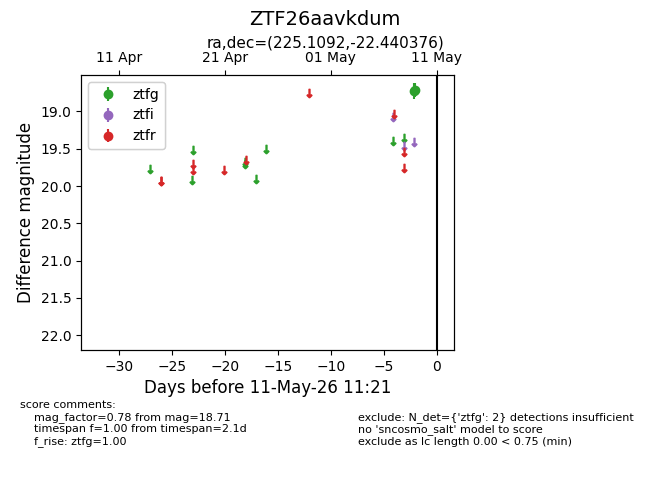
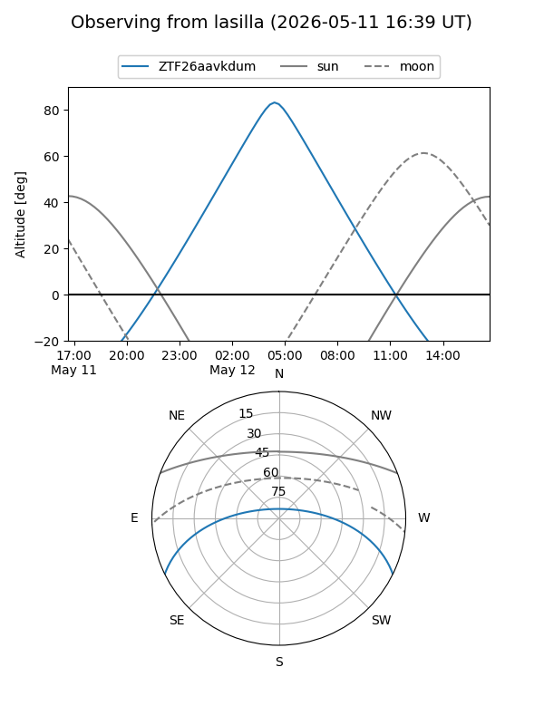
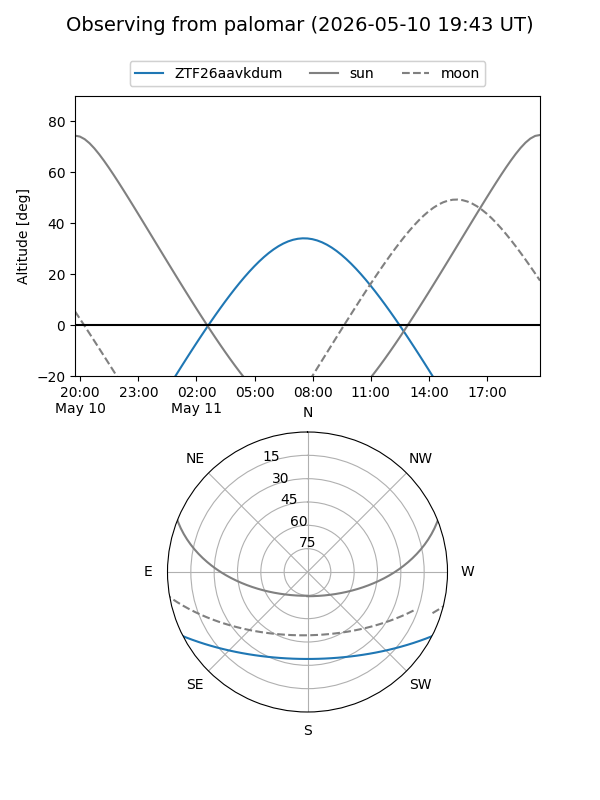

ZTF26aavkdum
Target ZTF26aavkdum at 2026-05-11 11:24
Aliases and brokers:
FINK: link
Lasair: link
ALeRCE: link
alt names
ZTF26aavkdum (ztf,fink_ztf)
Coordinates:
equatorial (ra, dec) = 225.1092,-22.44038
equatorial (HMS+DMS) = 15:00:26.22,-22:26:25.35
galactic (l, b) = (338.2479,+31.44198)
Flags:
Photometry:
last ztfg=18.71
2 ztfg detections
Lightcurve

Visibility


Additional plots